D'accord, alors créer un site web en 2025, c'est tout simplement une galère. Je connais tellement de gens dans ma vie personnelle qui veulent lancer une entreprise et qui consacrent tellement de temps à créer un site web avant même d'avoir un service ou un produit à proposer. Vous ne voulez pas être cette personne. Donc si vous voulez lancer une entreprise ou si vous avez une entreprise existante et que vous avez besoin d'un site web, cette plateforme vous permet de le faire extrêmement facilement en le créant avec l'IA. En utilisant Durable, vous pouvez réellement créer un site web en 30 secondes grâce à l'IA et dans cette vidéo, je vais vous montrer comment vous pouvez le faire et le personnaliser extrêmement rapidement pour pouvoir lancer votre entreprise en 2025. Ceci étant dit, plongeons directement dans le sujet.
Interface & Outils : Site web de Durable AI (plateforme de création de sites web).
Contenu textuel & Code : Page d'accueil de Durable avec sections 'Choose your own adventure', 'Customize to your liking', 'Publish and grow your business' et boutons de démarrage gratuit.
Action / Démonstration : Présentation visuelle de la plateforme d'IA pour la création rapide de sites web.
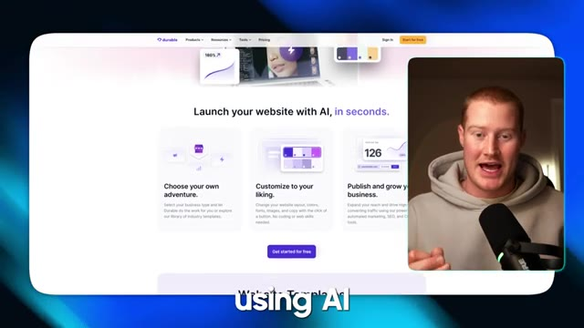
🔍 AgrandirTrès bien. Donc, première chose à faire, à l'intérieur de Durable, je vais venir. Je me connecte à mon compte. Assurez-vous de créer un compte. Et je vais cliquer sur créer une entreprise. Et ce que nous faisons ici, c'est que nous avons simplement besoin de saisir ces informations dans ce formulaire et cela va nous aider à créer un modèle afin de structurer notre site web. Donc, nom de l'entreprise, pensons à un cas d'usage et à un type spécifique de site web que je veux générer. Disons que nous voulons générer quelque chose pour une entreprise immobilière. Alors, appelons simplement ceci Arizona Real Estate Group. Décrivez l'entreprise.
Interface & Outils : Application Web Durable (app.durable.co) affichée dans un navigateur web.
Contenu textuel & Code : Formulaire de création d'entreprise comprenant les champs : nom de l'entreprise, description, localisation, langue du site web et option de réplication de design.
Action / Démonstration : Saisie des informations de l'entreprise dans le formulaire de l'application Durable.
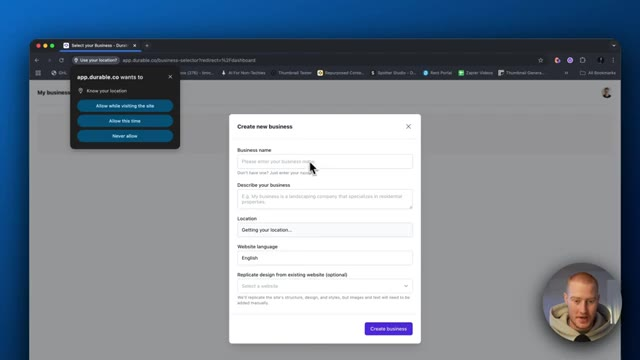
🔍 Agrandir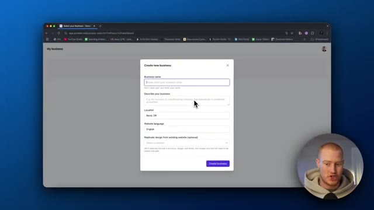
🔍 AgrandirDonc évidemment, je vais juste écrire ça ici. D'accord. Donc agence immobilière en Arizona, nous sommes spécialisés dans les propriétés haut de gamme que nous avons listées à l'achat ou à la location. D'accord. J'ai donc aussi ajouté, nous nous concentrons sur les acheteurs qui veulent acheter une maison de vacances pour eux-mêmes ou pour la louer pour des séjours de courte durée. J'ai donc ajouté un peu de complexité ici pour voir un peu si elle est capable de structurer cela et de l'ajouter au site web en conséquence. Donc l'emplacement, je vais dire Scottsdale, en Arizona, la langue du site web, l'anglais, conception reproduite de n'importe quel site web existant.
Interface & Outils : Navigateur web affichant l'application de création de site web / entreprise (Durable).
Contenu textuel & Code : Formulaire avec les champs 'Business name' (Arizona Real Estate Group), 'Describe your business', 'Location', 'Website language'.
Action / Démonstration : Saisie de texte dans le champ de description de l'entreprise pour définir l'activité immobilière haut de gamme.
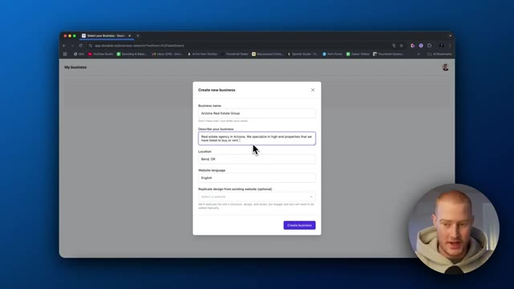
🔍 Agrandir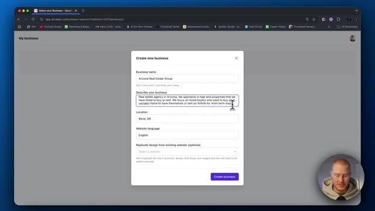
🔍 AgrandirC'est plutôt cool. Donc si j'avais déjà un site web créé, je pourrais juste genre le répliquer. Donc si vous construisez des sites web en tant d'agence ou quelque chose, ce qui est une super opportunité de le faire, vous pourriez juste genre avoir un modèle pour une entreprise et puis littéralement ça va juste créer ce modèle et puis juste changer ces informations ici spécifiques à chaque entreprise différente. Donc c'est cool. Créons l'entreprise. Et maintenant, ça devrait en fait aller de l'avant et construire notre site web pour nous. Donc j'ai vraiment vu quelque part que Durable dit qu'il peut construire votre site web en 30 secondes ou en moins de 30 secondes. Donc il a effectivement construit ça en moins de 30 secondes. Laissez-moi vérifier et voir à quoi ça ressemble. Nous allons définitivement devoir y apporter des modifications. Je vais vous montrer comment faire. C'est
Interface & Outils : Navigateur web affichant l'application SaaS Durable.ai.
Contenu textuel & Code : Formulaire de création de site incluant le nom de l'entreprise, la description, l'emplacement, la langue et l'option de réplication de design.
Action / Démonstration : Configuration d'un nouveau site web d'agence immobilière et lancement de sa création par la plateforme IA.
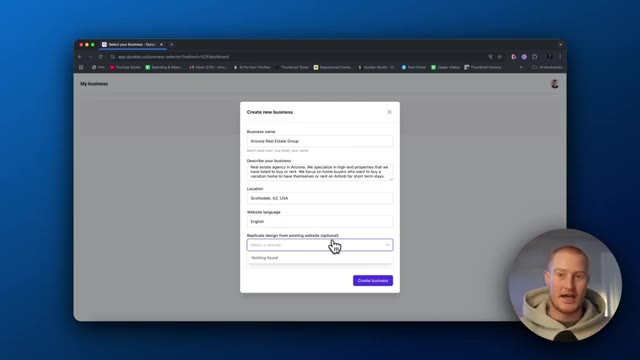
🔍 Agrandir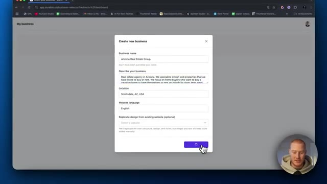
🔍 Agrandir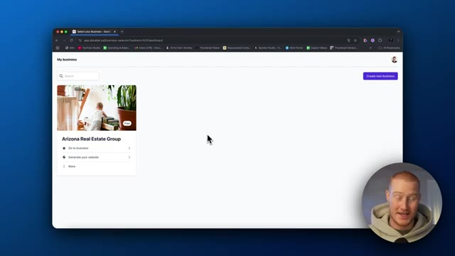
🔍 Agrandirvraiment facile, mais le fait que cela construise un site web en 30 secondes est génial. Et puis aussi vous pouvez voir que nous avons ce tableau de bord complet ici, ce qui est une autre des choses incroyables de cette plateforme que j'apprécie vraiment, nous avons évidemment le site web, nous avons le marketing donc nous pouvons créer des publications sur les réseaux sociaux sur Facebook, Instagram et X, nous pouvons, vous savez, nous avons un CRM ici qui est personnalisé pour chacun de nos clients, nous avons la facturation, nous avons une sorte de modèle de marque ici et ensuite nous avons aussi des agents, ce qui ressemble à un spécialiste SEO, un spécialiste de contenu, tout ça, donc ce n'est pas seulement un constructeur de sites web, c'est en quelque sorte une suite complète de tous ces différents outils dont vous avez besoin afin de
Interface & Outils : Navigateur web affichant l'interface de la plateforme Durable (app.durable.co).
Contenu textuel & Code : Tableaux de bord de gestion, options de création de site web en 30 secondes, gestion de la relation client (CRM), et fonctionnalités d'agents d'IA.
Action / Démonstration : Navigation à travers les différents menus et onglets du tableau de bord de la plateforme par le présentateur.
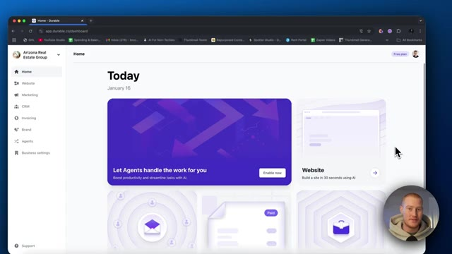
🔍 Agrandir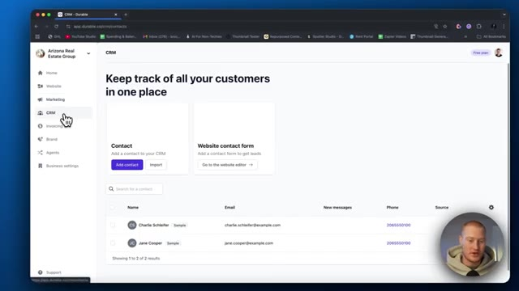
🔍 Agrandir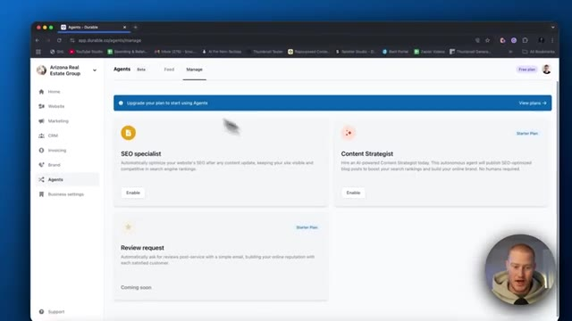
🔍 Agrandirgérer un site web pour vous-même ou pour un client. Très bien, donc je clique simplement sur générer le site web et il est actuellement en train de le générer et il a bien dit qu'il le ferait en moins de 30 secondes. Et voilà. C'était à peu près 30 secondes. Vous pouvez voir qu'il a maintenant ce site web qui, honnêtement, a l'air vraiment bien sur la base du premier type de consigne que nous lui avons donné. C'est vraiment bien. Je suis assez impressionné par cela. Si nous remontons tout en haut, vous pouvez voir qu'il a en fait des images en arrière-plan qu'il fait défiler. Ce sont de vraies images de l'intérieur de l'Arizona, ce qui est cool. Découvrez un luxe sans pareil dans les résidences locatives les plus exclusives du comté de Maricopa. Évidemment, ce que nous pourrions
Interface & Outils : Navigateur web affichant le constructeur de site web Durable AI avec panneau de prévisualisation.
Contenu textuel & Code : Interface utilisateur de création de site web avec texte d'en-tête, boutons d'appel à l'action et options d'édition.
Action / Démonstration : Présentation et navigation à travers les différentes sections du site web généré par l'IA.
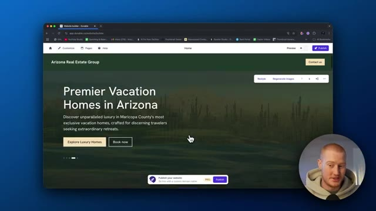
🔍 Agrandir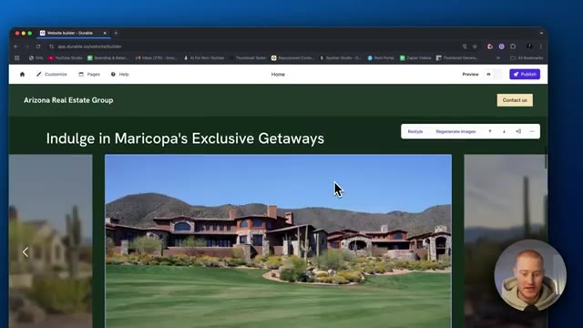
🔍 Agrandir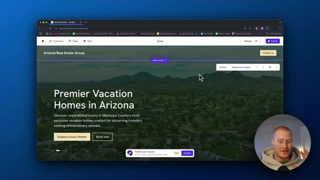
🔍 Agrandirce qu'on fait, c'est qu'on peut cliquer sur n'importe lequel de ces éléments ici et modifier cela. Donc, si on ne veut évidemment pas avoir ce texte, peut-être qu'il n'est pas spécifique à notre entreprise, ce n'est pas la bonne information, nous pourrions cliquer sur régénérer. Nous pourrions le simplifier, l'optimiser pour le référencement naturel. C'est plutôt cool. Les fonctionnalités d'IA sur cette plateforme sont honnêtement époustouflantes et plutôt utiles en fait. Alors simplifions simplement ce texte ici et voyons ce qu'il nous donne. Alors voilà. Il a juste rendu notre sous-texte ici un peu plus percutant, ce qui est vraiment cool. Vous pouvez cliquer dessus. Je crois qu'on peut en changer le style. Donc style un, style deux. Oh, on dirait que ça change le style des boutons. Alors voilà
Interface & Outils : Navigateur web affichant l'application Durable Website Builder.
Contenu textuel & Code : Éditeur de site web avec un aperçu de page pour "Arizona Real Estate Group" et des options de personnalisation textuelle (Tagline, Headline, Subtext) incluant un bouton de régénération.
Action / Démonstration : Sélection et modification du texte de la section de présentation dans l'éditeur du site web.
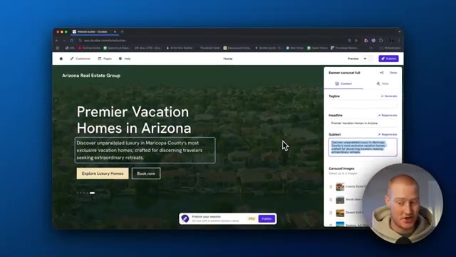
🔍 Agrandiraller. C'est super. Laissez-moi faire défiler jusqu'en bas de ceci. En fait, une autre chose ici, nous pourrions en fait régénérer les images. Donc c'est cool. Cependant, j'aime bien ce qu'il nous a réellement donné. Donc vous pouvez voir que nous avons une nouvelle section ici. Nous pourrions ajouter une section si nous voulons. Nous pourrions donc personnaliser cela autant que nous le voulons mais c'est juste le premier, encore une fois, ce premier prototype d'un site web qu'il nous a construit donc allons-y : offrez-vous les échappées exclusives de Maricopa. Évidemment, ce sont juste comme des images de stock que j'ai récupérées sur Internet donc si nous voulions ajouter nos propres images de biens réelles, nous devrions les fournir à notre genre d'assistant IA ici et il le ferait alors
Interface & Outils : Navigateur web affichant l'outil de création de sites web par IA "Durable" avec une webcam du présentateur en bas à droite.
Contenu textuel & Code : Éditeur de site web avec options de personnalisation, boutons "Restyle" et "Regenerate images", et texte de présentation immobilière. [DESC_IMAGE_3] Navigation et visualisation des images générées automatiquement pour illustrer le site web immobilier.
Action / Démonstration : Explications face caméra et analyse conceptuelle des marchés.
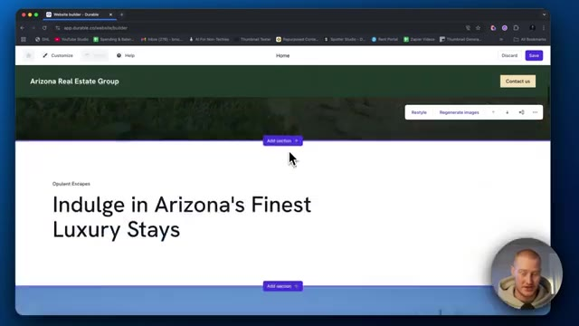
🔍 Agrandir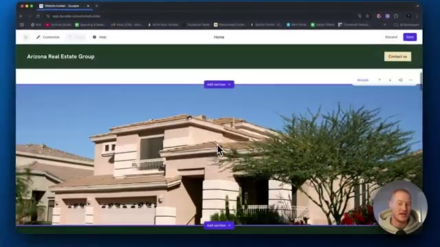
🔍 Agrandir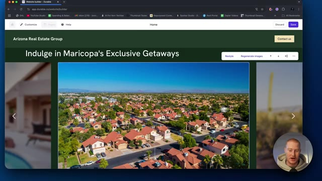
🔍 Agrandirmets à jour toutes ces images pour nous donc voilà, on n'a évidemment pas besoin de rendre ça fonctionnel donc essentiellement quand tu cliques là-dessus ça t'envoie vers, tu sais, les annonces immobilières réelles et ça montre aussi toutes les différentes marques avec lesquelles on travaille. Donc tu pourrais cliquer là-dessus et on pourrait ajouter différents logos ici pour montrer de la crédibilité. Donc essentiellement, selon si tu es une agence ou quelque chose comme ça, tu pourrais alors ajouter toutes les différentes entreprises avec lesquelles tu as travaillé.
Interface & Outils : Constructeur de site web Durable (app.durable.co)
Contenu textuel & Code : Éditeur de contenu web, paramètres d'images, attributs alt, titres de blocs et galerie de logos partenaires (Logoipsum)
Action / Démonstration : Modification des propriétés et des logos de la vitrine sur un site web immobilier généré par IA
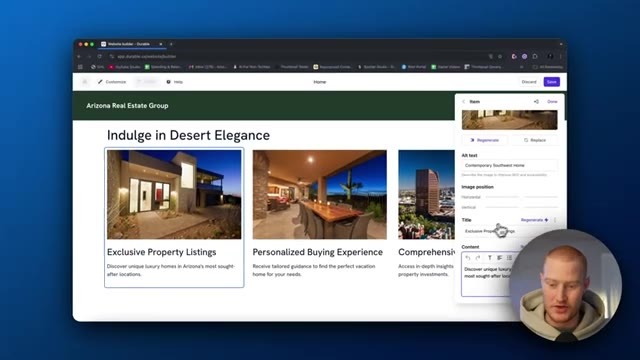
🔍 Agrandir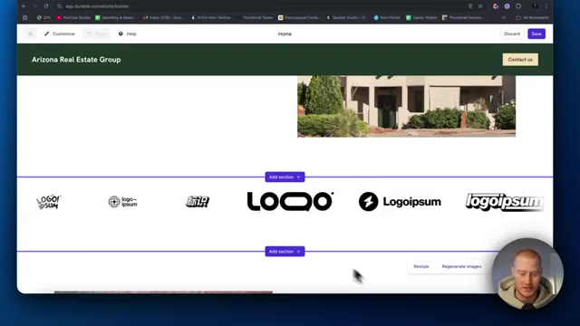
🔍 Agrandir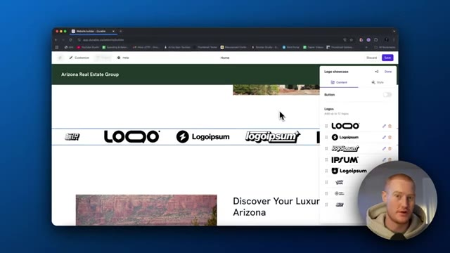
🔍 AgrandirEt j'ai ça sur une bannière ici, ici de la part de nos heureux invités. Donc j'aime bien, j'ai en fait ajouté ça. C'est très intuitif et ça sait à quoi un site web de bien immobilier devrait ressembler. C'est la super partie avec ça. Nous n'avons pas besoin de décortiquer et de lui dire chaque petit détail dont nous avons besoin pour rendre cette chose belle. Il sait déjà que nous devons ajouter, vous savez, des informations de nos heureux invités afin d'augmenter les conversions de personnes voulant réellement travailler avec notre entreprise. Et puis il a même ajouté un formulaire de collection de prospects ici, ce qui est plutôt génial. Donc les gars, c'est vraiment bien jusqu'à présent. Cependant, je ne suis pas fan de ce style vert ici. Alors laissez-moi aller de l'avant et voir si je peux restyler ceci et voir
Interface & Outils : Navigateur web affichant le constructeur de site web Durable avec interface d'édition visuelle par glisser-déposer/blocs.
Contenu textuel & Code : Page web en cours de construction pour "Arizona Real Estate Group", comprenant des témoignages de clients, des images immobilières et des boutons d'appel à l'action.
Action / Démonstration : Le présentateur navigue et présente la section des témoignages ("Happy Guests") générée automatiquement sur le site web immobilier.
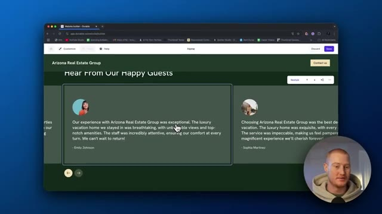
🔍 Agrandir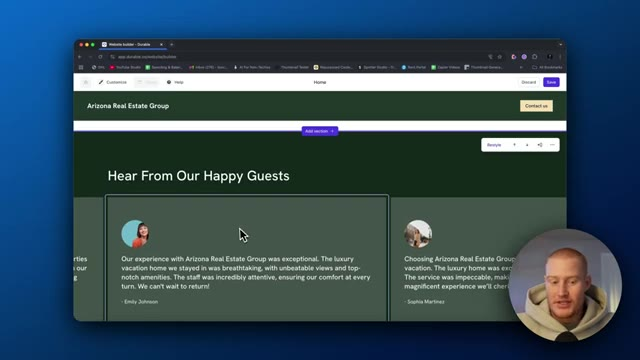
🔍 Agrandir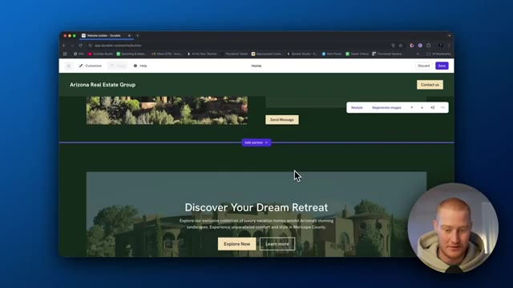
🔍 Agrandirc'est un peu ce que ça nous donne ici. D'accord. Donc en fait, j'ai cliqué sur réinitialiser le style et ça a restylisé toute cette petite section. Donc ça a l'air sympa. Ça a définitivement changé l'en-tête ici. Au lieu d'être par ici, ça l'a ajouté là. Je trouve que ça a l'air plutôt sympa. Ça a toujours les effets verts ici, ce qui me permet d'aller voir comment je peux personnaliser ça. Allons simplement dans les couleurs. Oh, donc on peut changer la palette de couleurs pour ce qu'on veut. Alors allons-y pour des couleurs plus de type Arizona.
Interface & Outils : Constructeur de sites web Durable (app.durable.co).
Contenu textuel & Code : Interface utilisateur de création de site internet, options de style et palettes de couleurs.
Action / Démonstration : Modification et réinitialisation du style d'une section du site web avec aperçu en temps réel.
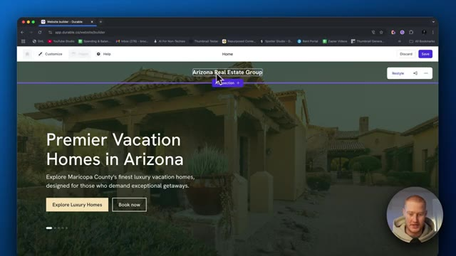
🔍 Agrandir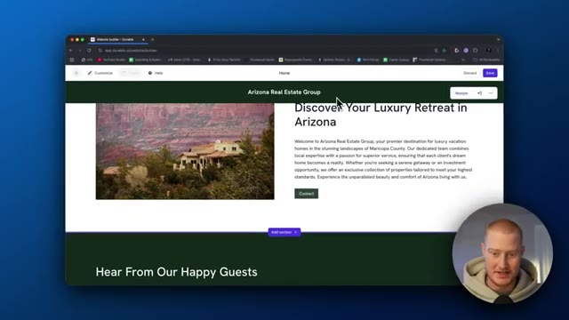
🔍 Agrandir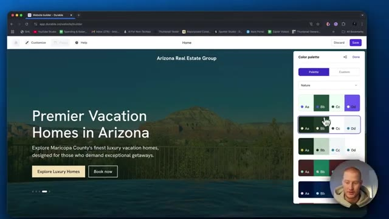
🔍 AgrandirJ'ai l'impression que ça colle. Oh, voilà. Ça a l'air beaucoup mieux. Ça correspond un peu au paysage de l'Arizona avec, vous savez, de la pierre et des rochers. Ça a l'air super. D'accord. Voyons ce que nous pourrions d'autre personnaliser ici et à quel point c'est facile. D'accord, mots-clés. Vous pouvez voir que je suis sur le forfait gratuit ici, mais si nous venons sur Durable, jetons un œil à leurs tarifs. D'accord, donc ça a l'air d'être 12 dollars par mois pour le forfait de base, 20 pour le forfait professionnel, et je parie que vous pourriez commencer avec juste le forfait à 12 dollars. On dirait qu'il y a un référencement automatisé, donc nous l'aurions inclus, mais on dirait que l'outil comprend les mots-clés sur lesquels nous voulons nous positionner. Donc si vous y connaissez quelque chose en référencement,
Interface & Outils : Navigateur web, constructeur de site web Durable AI (app.durable.co).
Contenu textuel & Code : Palette de couleurs, options de personnalisation d'un site web, grilles de tarification (plans Starter, Business, Mogul) avec fonctionnalités incluses.
Action / Démonstration : Sélection d'une palette de couleurs adaptée au paysage de l'Arizona sur un constructeur de site web IA, puis navigation vers la page des prix.
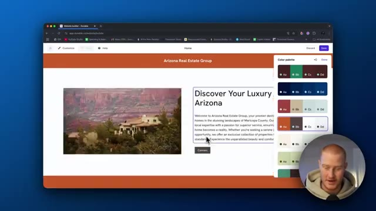
🔍 Agrandir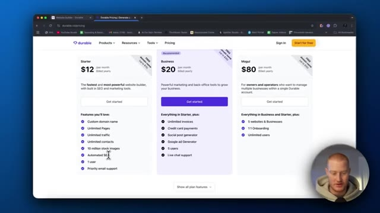
🔍 Agrandiril est essentiel d'obtenir des vues sur votre site web. Donc, chaque fois que les gens recherchent sur Google ou à l'avenir, sur chat gpt ou n'importe quel autre moteur de modèle de langage étendu, il se classera alors plus haut sur celui-ci afin que votre site web soit plus vu. Donc, si vous cherchez des propriétés airbnb en arizona, c'est un peu comme cela que fonctionne le référencement naturel, nous pourrions donc, vous savez, faire en sorte qu'il optimisât certaines choses sur le site web pour ce référencement naturel, ce qui est en fait une fonctionnalité incroyable. d'accord, donc une chose est que je veux des coins plus arrondis et si je viens vers ces autres styles ici, nous pourrions changer cela, alors ajoutons, choisissons la taille des coins arrondis pour votre site web. Faisons juste moyen, c'est fait. Et puis sauvegardons ceci. Et ensuite, cela devrait générer ces
Interface & Outils : Navigateur web affichant le constructeur de site web alimenté par l'IA Durable.
Contenu textuel & Code : Liste de mots-clés SEO ciblés sur l'immobilier et options de style pour le site web.
Action / Démonstration : Navigation et démonstration de la configuration des fonctionnalités de référencement et d'édition visuelle.
avec les coins arrondis. D'accord. Donc maintenant, je clique sur l'aperçu et voilà à quoi ressemblerait notre site une fois en ligne. C'est parti. Ça a l'air super. Oh, voilà. Voilà les coins arrondis. D'accord. Donc vous pouvez voir qu'il a ajouté ces coins arrondis ici et ça a l'air super. Les photos sont géniales. J'aime bien l'aspect des coins arrondis. Et c'était aussi simple que de modifier une petite chose de plus ici. Les gars, ce site web a vraiment l'air super pour littéralement moins de cinq minutes de mon temps. J'ai écrit une consigne de base sur ce que j'essayais de construire et il l'a construit. Encore une fois, nous pourrions ajouter et modifier tout ce que nous voulons ici. Nous pourrions ensuite aller sur le
Interface & Outils : Navigateur web affichant le constructeur de site Durable.
Contenu textuel & Code : Page web en mode prévisualisation avec des images de propriétés immobilières et un design moderne aux coins arrondis.
Action / Démonstration : Visualisation de l'aperçu du site web pour vérifier l'application des coins arrondis sur les images.
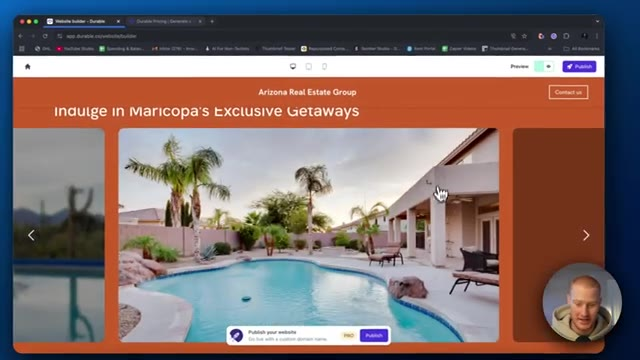
🔍 Agrandir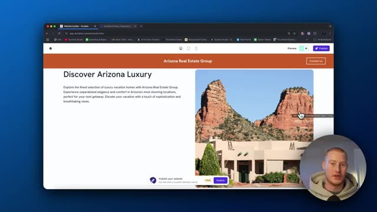
🔍 Agrandirtablette et voir à quoi ça ressemble sur un iPad ou un truc comme ça. Incroyable. Ça a l'air génial, les gars. Et puis sur l'iPhone aussi, la mise en page pour le coup ressemble franchement à un site web professionnel. On dirait que j'ai payé quelqu'un pour me construire un site web. Et un truc sur lequel je veux vraiment insister, les gars, c'est que tellement de gens perdent leur temps à construire un site web pour leur entreprise. Si vous avez une idée d'entreprise ou que vous venez juste de lancer une entreprise et que vous passez une tonne de temps sur votre site web avant même d'avoir des clients, vous perdez votre temps. Et Durable fait en sorte qu'il soit extrêmement facile de se construire un site web, d'avoir quelque chose en ligne et prêt à l'emploi. De cette façon, vous
Interface & Outils : Navigateur web affichant l'outil de création de sites web Durable AI.
Contenu textuel & Code : Maquette de site web pour "Arizona Real Estate Group" avec texte descriptif et boutons de navigation.
Action / Démonstration : Navigation et basculement entre les vues desktop et mobile du site généré automatiquement.
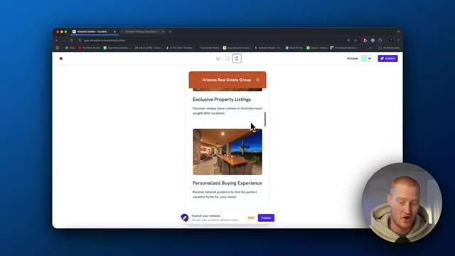
🔍 Agrandir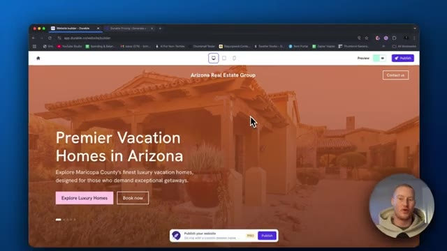
🔍 Agrandir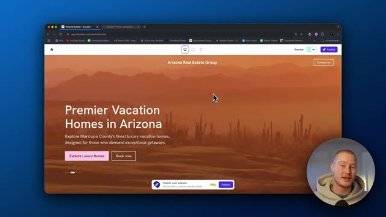
🔍 Agrandirpourrait alors, vous savez, aller de l'avant et essayer d'obtenir des clients. Et cela, rien que cela, rend cette plateforme utile. Juste la facilité d'utilisation afin de mettre un site web sur pied. Dernière chose que je veux aborder dans cette vidéo, je ne vais pas plonger profondément là-dedans. Peut-être que je le ferai dans une prochaine vidéo, mais je veux montrer les autres fonctionnalités. Nous avons donc l'onglet marketing ici. Nous n'avons pas seulement des sites web que nous pouvons construire. Nous avons le marketing. Nous pouvons donc réellement créer certaines publications. Il semble que nous devions faire une mise à niveau pour faire cela. CRM également. Nous pouvons ajouter différents contacts ici et garder une trace de tous nos clients. Donc disons que nous ajoutons un formulaire de contact sur le site web, que nous avons effectivement ajouté, vous pouvez le voir ici. Il collecte ensuite toutes ces informations. Et puis au lieu d'avoir ceci
Interface & Outils : Navigateur web affichant la plateforme de création de site web et CRM Durable (app.durable.co).
Contenu textuel & Code : Tableaux de contacts clients, formulaires de lead generation, URL de site web pré-générée, options de publication et de domaine. [DESC_IMAGE_3] Navigation dans l'interface de gestion client et démonstration de l'ajout d'un contact dans le CRM.
Action / Démonstration : Explications face caméra et analyse conceptuelle des marchés.
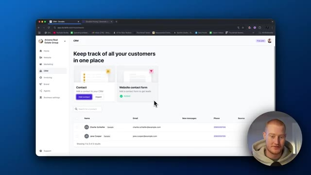
🔍 Agrandir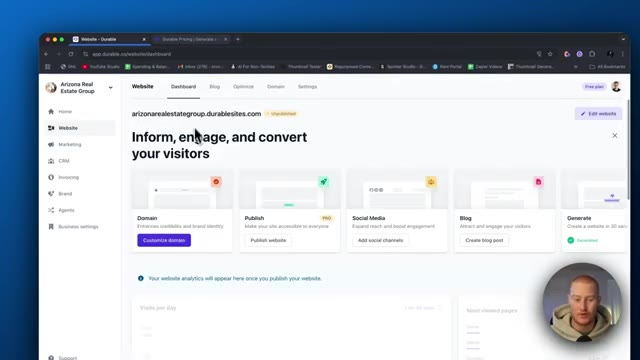
🔍 Agrandir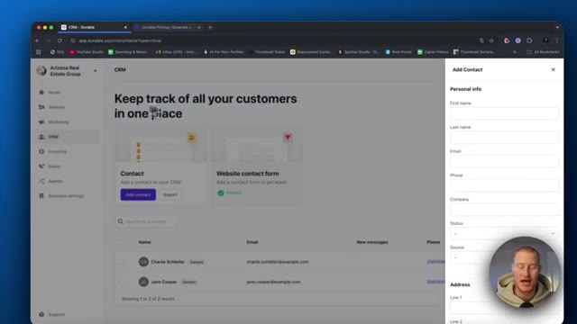
🔍 Agrandirenvoyé vers un autre CRM, nous avons un CRM qui est intégré de manière native dans Durable. Donc c'est vraiment génial. Nous pourrions évidemment leur envoyer une facture, leur envoyer un e-mail, les ajouter à une liste de diffusion, tout ce genre de choses extraordinaires, ainsi que la facturation. Donc si vous gérez, disons, une agence, par exemple, vous pourriez facturer directement sur le site Web au lieu d'avoir à utiliser quelque chose comme Stripe. Agents IA, je ne me suis pas vraiment penché sur ce qu'est cette fonctionnalité pour l'instant, mais vous pourriez voir des spécialistes SEO. Nous pourrions optimiser notre site Web avec du contenu SEO de manière autonome, ce qui est vraiment super, un stratège de contenu. Nous pourrions donc embaucher un consultant alimenté par l'IA afin de concevoir en quelque sorte notre stratégie de contenu,
Interface & Outils : Application web Durable (CRM et tableaux de bord de gestion).
Contenu textuel & Code : Interface utilisateur affichant la liste des contacts du CRM, avec des options pour ajouter des contacts, envoyer des factures ou des e-mails.
Action / Démonstration : Navigation dans le CRM intégré de l'application pour présenter la gestion des clients.
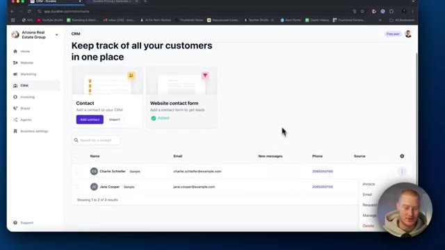
🔍 Agrandirtout ça. Aucun humain n'est requis, c'est juste 100 % de l'IA. Voilà qui est fait, les amis. C'est Durable. Nous avons créé un site web extraordinaire en un peu moins de 10 minutes. C'est une super plateforme à utiliser, les amis. Si vous voulez lancer un site web très rapidement, c'est la meilleure façon de le faire avec l'IA. Donc si vous avez aimé cette vidéo, n'oubliez pas de laisser un pouce bleu, de commenter, de vous abonner et de vous inscrire sur Durable. Je vous retrouve dans la prochaine vidéo, les amis.
Interface & Outils : Navigateur web affichant le tableau de bord de l'outil de création de sites web Durable.
Contenu textuel & Code : Interface utilisateur de gestion de site web avec des menus pour le site, le marketing, le CRM, la facturation et les agents IA.
Action / Démonstration : Navigation et présentation du tableau de bord de l'application Durable.
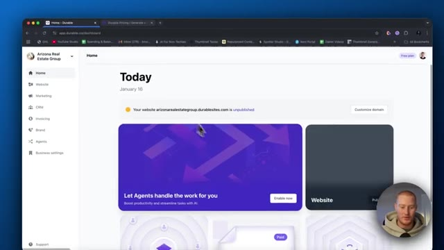
🔍 Agrandir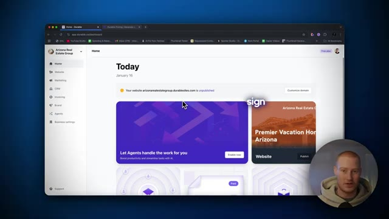
🔍 Agrandir